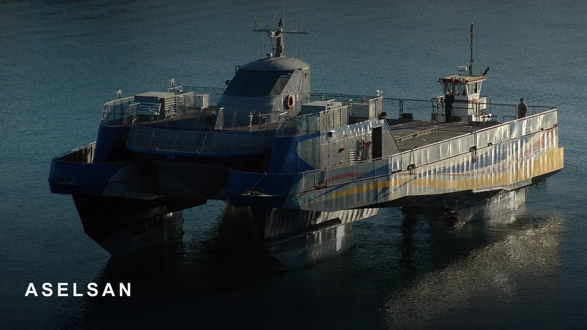
SAHNE
ASELSAN, GÖKDENİZ sistemini sivil gemilere de uyarladı
Gemi görseli sivil deniz taşımacılığı haberine uygun.
Her kapak haberin konusunu gösteren gerçek bir sahne + marka imzası. Üzerinde başlık yazısı yok.

Gemi görseli sivil deniz taşımacılığı haberine uygun.
Haber akıllı telefon kamerasıyla ilgili, fotoğraf genel telefon görseli.
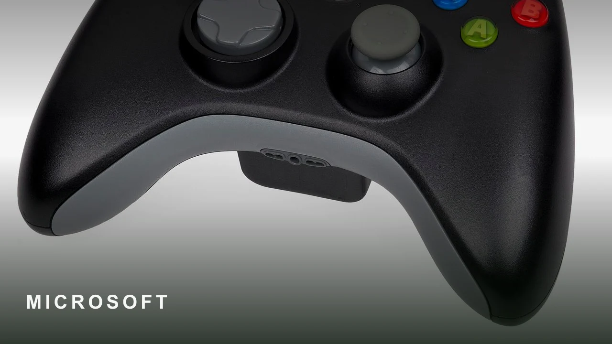
Fotoğraf Xbox markasına ait oyun kumandasını göstermektedir.
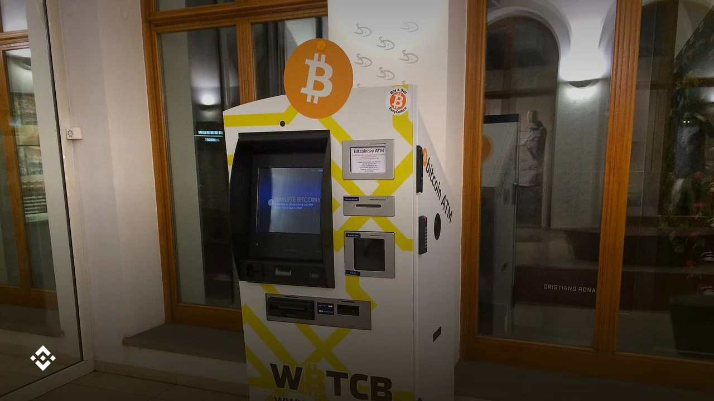
Kripto para ve borsa temasına uygun gerçek bir sahne.
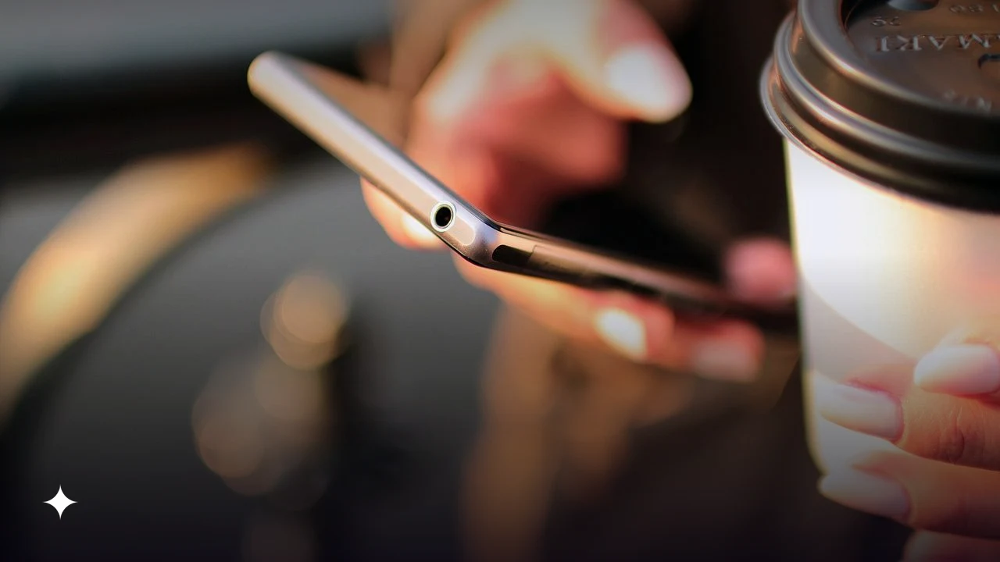
Telefon kullanan kişi, Android haber konusunu doğru yansıtıyor.
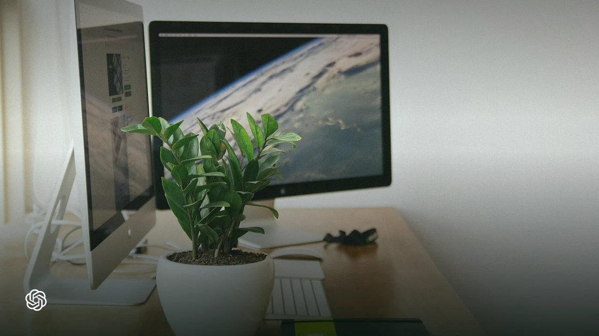
Yapay zeka ve teknoloji haberine uygun ofis ortamı.
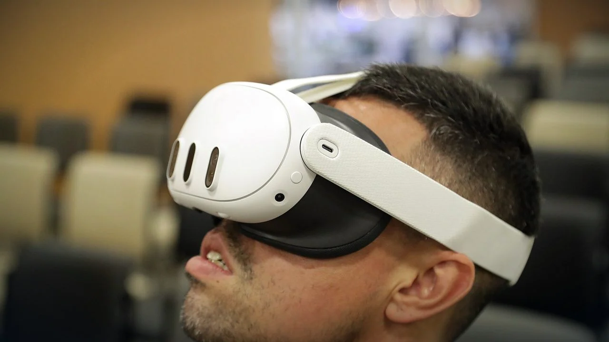
Görsel, Meta VR gözlüğünü takan bir kişiyi gösteriyor.
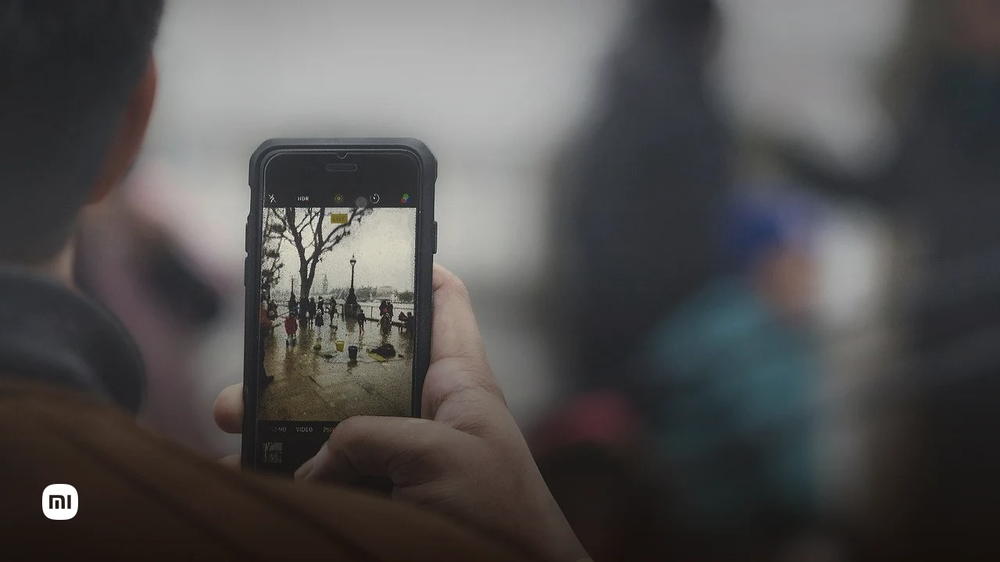
Fotoğrafta akıllı telefon tutan bir kişi görünmektedir.
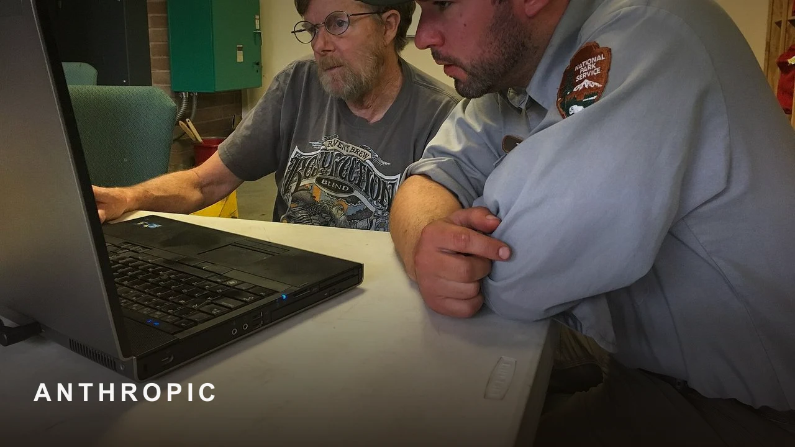
Bilgisayar kullanan çalışanlar şirket içi yapay zeka kullanımını yansıtıyor.
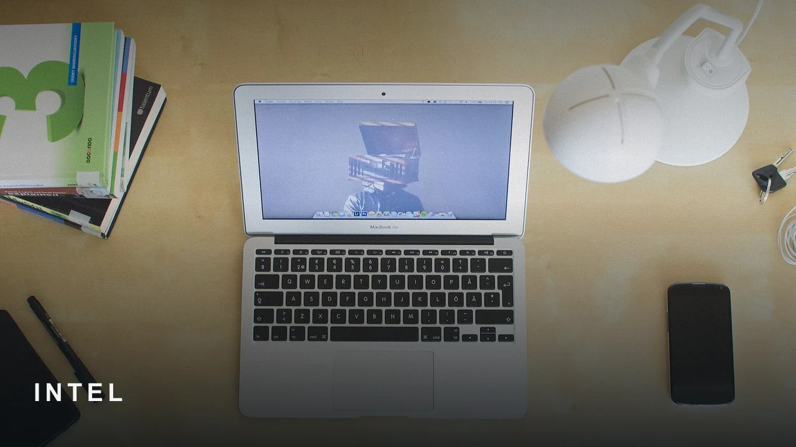
Dizüstü bilgisayar kategorisini ve masaüstü çalışma ortamını doğru yansıtıyor.
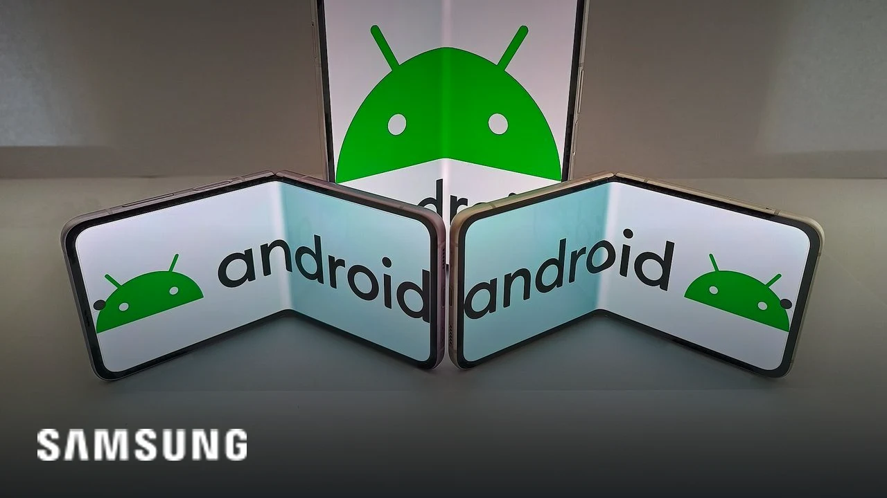
Katlanabilir telefonlar haberi için uygun ve gerçek bir görsel.
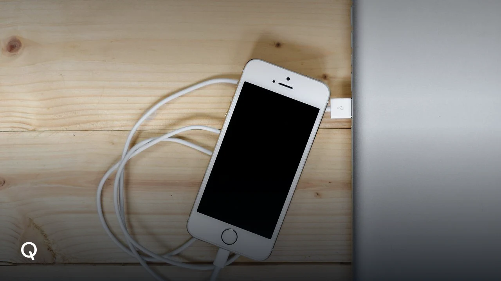
Akıllı telefon haberi için uygun bir cihaz görseli.
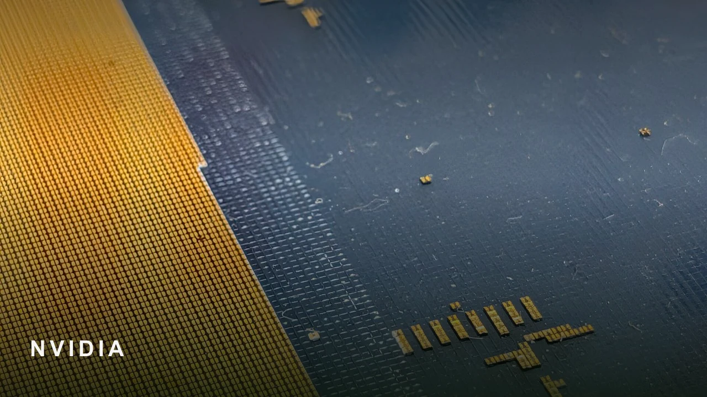
Haber çip ve donanım odaklı, fotoğraf işlemci gösteriyor.
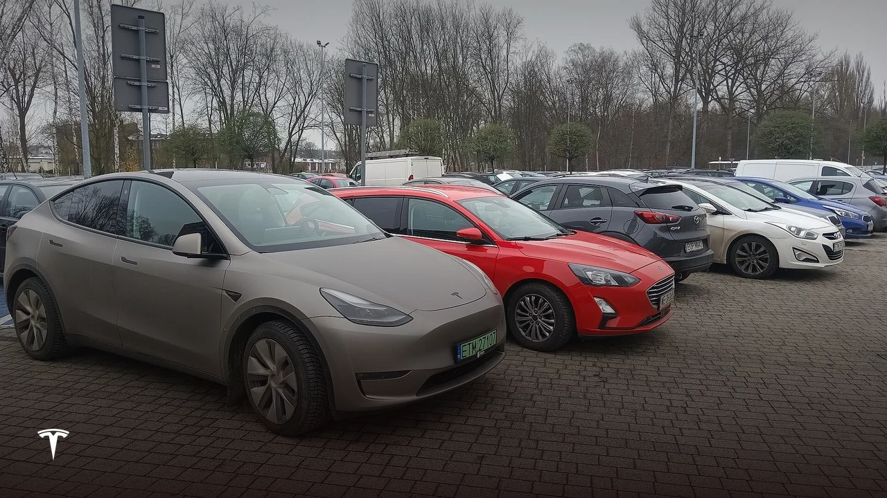
Fotoğrafta Tesla modeli ve otoparkta gerçek araçlar yer alıyor.
Haberin konusu olan müzik dinleme eylemini yansıtıyor.
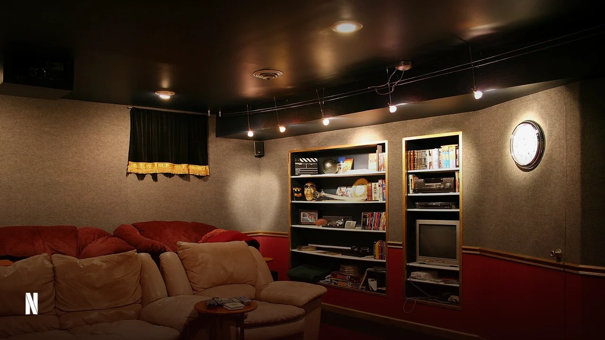
Netflix haberine uygun film ve medya kategorisi sahnesi.
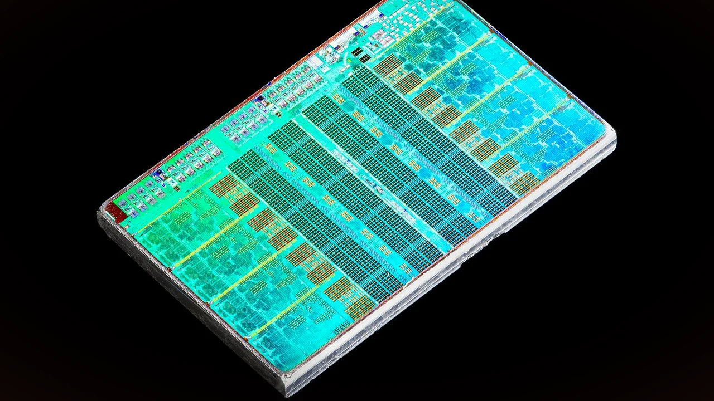
Görsel, Arm işlemci yongasını net şekilde gösteriyor.